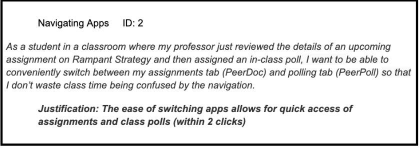
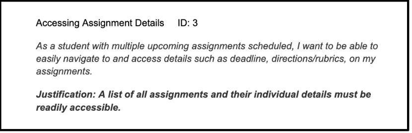
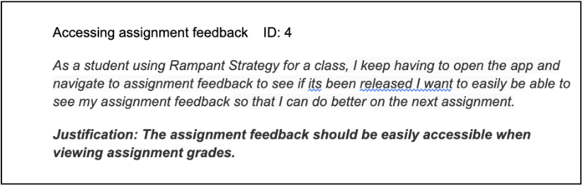
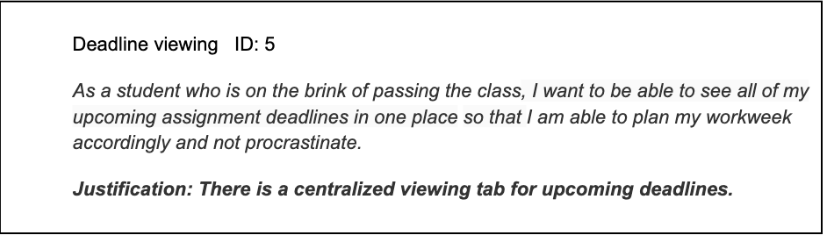

According to Ben Schneiderman's 8 Golden Rules, maintaining the user's control over their experience using an interface is rule 7 of UX design, and not allowing the user to work on their own timeframe is a major fault of the software currently ("The Eight Golden Rules"). If the user makes a mistake and opens the assignment when they cannot fully complete it, the current UI makes it so that they either lose all their work or have to submit it incomplete. It doesn't allow them to remain in control of their own experience.
If a software contains features but they are inaccessible and unintuitive to access, the features become more of a hindrance than a benefit. Currently, Rampant provides all of these features in two separate applications, with names that are unclear signifiers and don't exactly explain what feature is contained in each tab. According to the U.S. Department of Education's Teacher Digital Learning Guide, digital learning platforms such as Rampant Strategy should ensure “that each student can participate, engage, and learn in the digital space” with emphasis on “optimizing your time, and that of your students” (U.S. Department of Eductation). We believe that the current design is contrary to this guideline because it does not foster efficient use of time in the hybrid model classroom. The delay caused by the switching between apps wastes valuable class time, and circumventing this problem can empower students to use their time effectively in class.
Our decision for not moving forward with User Story 3 was that it was much too broad to be completed in one user story. We based user stories 4 and 5 off of this story to break it down into workable pieces.
Feedback serves as an important learning tool and can significantly impact students ability to learn and improve ("Perspectives in Education"). The University of South Carolina's Institute for Educational Efficacy states that one of the trademarks of effective feedback is that its given in a timely manner, and if the software doesn't allow the user to access their feedback easily as soon as it is released, then it makes the feedback less effective (“Tools & Resources”).
Assignments are the infrastructure which upholds classroom education, so it is important that Rampant prioritizes the way that assignment information is displayed and empowers students to take control of their own learning in the class. Better organized software will enable students with better organizational skills and viewing feedback is important to be able to improve in whatever you are learning. This is backed up by the ISTE Standards for students which states ways in which digital technology can allow students to be in charge of their grades in class by accessing the necessary information through the software ("ISTE Standards: Students"). This user story aims to make it easier for students to evaluate their overall standing in the class and take steps towards improving their grade. Additionally, research shows that having good time management systems implemented in student learning software has significant positive effects for student grade outcomes ("Learning Management System Calendar").